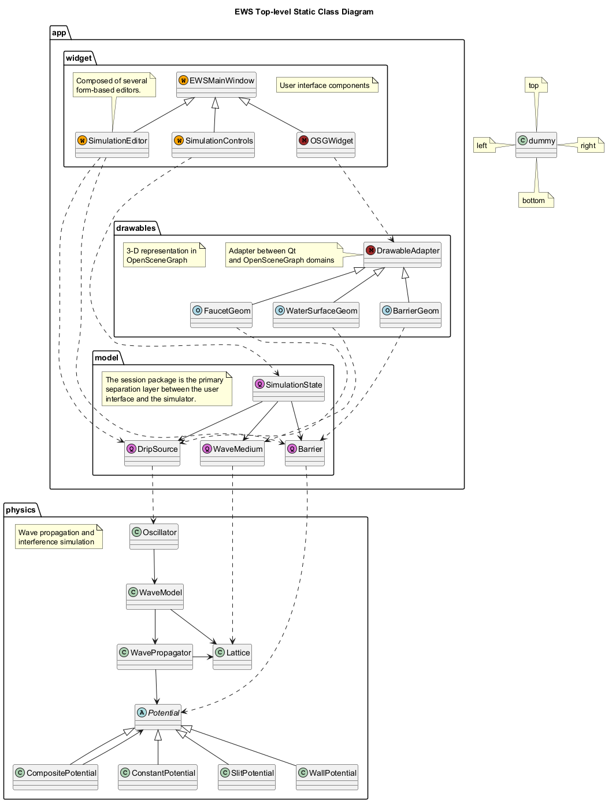

@startuml
skinparam ClassStereotypeFontSize 7
skinparam ClassStereotypeFontStyle Plain
skinparam ClassStereotypeFontName Helvetica
skinparam CircledCharacterFontStyle Bold
skinparam CircledCharacterFontSize 12
skinparam CircledCharacterRadius 8
!pragma defaultLabeldistance 2.1
!pragma defaultLabelangle 30
title EWS Top-level Static Class Diagram
package app {
package drawables {
note as N3
3-D representation in
OpenSceneGraph
end note
class DrawableAdapter << (M, brown) >>
class WaterSurfaceGeom << (O,lightblue) >>
class BarrierGeom << (O,lightblue) >>
class FaucetGeom << (O,lightblue) >>
DrawableAdapter <|-- WaterSurfaceGeom
DrawableAdapter <|-- BarrierGeom
DrawableAdapter <|-- FaucetGeom
note as N4
Adapter between Qt
and OpenSceneGraph domains
end note
N4 .> DrawableAdapter
}
package widget {
note as N2
User interface components
end note
class EWSMainWindow << (W,orange) >>
class SimulationEditor << (W,orange) >>
class SimulationControls << (W,orange) >>
class OSGWidget << (M, brown) >>
EWSMainWindow <|-- SimulationEditor
EWSMainWindow <|-- OSGWidget
EWSMainWindow <|-- SimulationControls
note as N0
Composed of several
form-based editors.
end note
N0 ..> SimulationEditor
}
package model {
class SimulationState <<(Q,orchid)>>
class DripSource <<(Q,orchid)>>
class Barrier <<(Q,orchid)>>
class WaveMedium <<(Q,orchid)>>
SimulationState --> DripSource
SimulationState --> Barrier
SimulationState --> WaveMedium
note as N1
The session package is the primary
separation layer between the user
interface and the simulator.
end note
}
}
package physics {
class WaveModel
class Lattice
class Oscillator
class WavePropagator
Oscillator --> WaveModel
WaveModel --> Lattice
WaveModel --> WavePropagator
WavePropagator -> Lattice
note as N5
Wave propagation and
interference simulation
end note
abstract class Potential
Potential <|-- CompositePotential
CompositePotential --> Potential
Potential <|-- ConstantPotential
Potential <|-- SlitPotential
Potential <|-- WallPotential
WavePropagator --> Potential
}
DripSource ..> Oscillator
Barrier ..> Potential
WaveMedium ..> Lattice
SimulationEditor ..> DripSource
SimulationEditor ..> Barrier
SimulationControls ..> SimulationState
OSGWidget ...> DrawableAdapter
WaterSurfaceGeom ...> WaveMedium
BarrierGeom ...> Barrier
FaucetGeom ...> DripSource
class dummy
note left of dummy : left
note right of dummy : right
note top of dummy : top
note bottom of dummy : bottom
@enduml